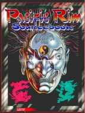

|  | Fiche technique |
| Supplément pour le jeu de rôles Cyberpunk 2020, édité par R. Talsorian Games (1994) | |
| Langue | Anglais |
| Thème | L'Asie du Sud-Est en 2020 |
| Qualité du background | 4 / 5 |
| Qualité des scénarii | - |
| Qualité des règles | 1 / 5 |
| Qualité des illustrations | 4 / 5 |
| Qualité de l'écriture | 4 / 5 |
L'Asie du Sud-Est n'est pas laissée pour compte puisque ce copieux supplément se donne l'ambition de couvrir toute cette partie du monde : Corée, Japon, Chine, Taïwan, l'Indochine, les archipels indonésiens et la zone australienne. Cette volonté de couvrir tous les pays pousse néanmoins les auteurs à privilégier les principaux comme le Japon pour en négliger d'autres comme le Cambodge ou le Laos. Si le background des pays est intéressant, je regrette tout de même fortement que tant d'espace soit gâché par la présence de tables de génération de background pour PJ, qui me semblent plutôt stériles. De même, un espace à la fin a été consacré aux arts-martiaux. Force est de constater que les auteurs sont visiblement mal renseignés sur les arts martiaux et sports de combat car si le catalogue d'armes traditionnelles est plutôt complet, les règles proposées quant à elles sont ridicules (tout comme elles l'étaient déjà dans CP2020).
{kind=link}